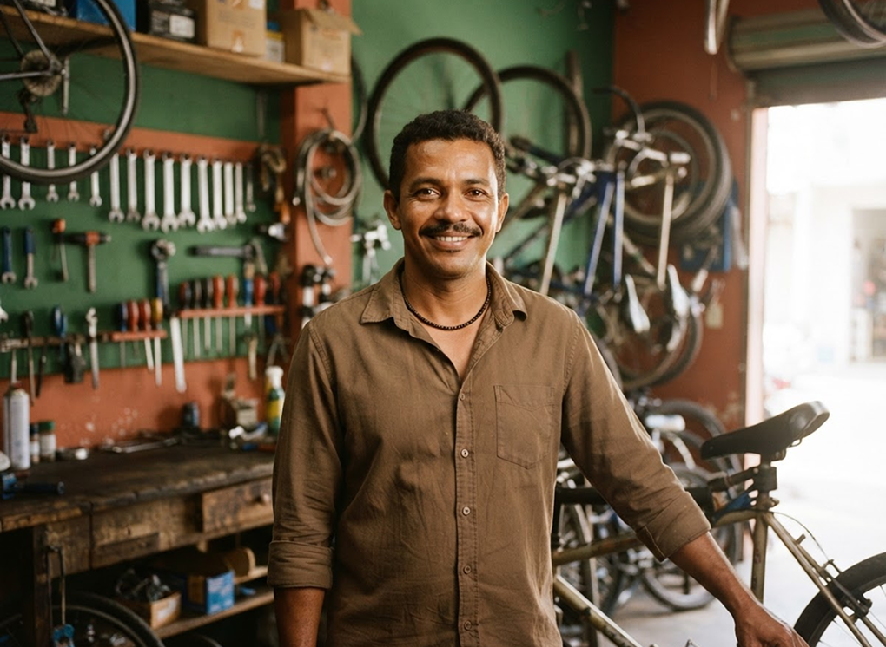

ECEscritório ConectaHá 2 horas
Auxiliar administrativo
⌖ Centro, Paulista
R$ 1.800 a R$ 2.100↗
✳ Gente de Paulista, talento daqui.
Conectamos quem quer trabalhar a quem precisa contratar. Encontre o seu próximo emprego em Paulista e dê um novo passo na sua história.
◉ Gratuito para você. Perto da sua realidade.
Oportunidades por perto
Explore vagas em diferentes áreas e encontre o que combina com você.
⌖ Centro, Paulista
⌖ Janga, Paulista
⌖ Paratibe, Paulista
⌖ Maranguape I, Paulista
⌖ Centro, Paulista
⌖ Janga, Paulista
Vagas e empresas ilustrativas para apresentar a plataforma. Os detalhes de cada oportunidade devem ser confirmados antes da candidatura.
Da nossa cidade, para a nossa gente
O comércio do Centro aos serviços no Janga, de Paratibe a Maranguape: Paulista é feita por gente que faz acontecer. Nosso papel é aproximar essas pessoas das oportunidades.
⌖ Uma plataforma com o olhar voltado para Paulista-PE.
Simples, do seu jeito
Crie sua conta e preencha seu perfil com suas experiências, habilidades e interesses.
Busque por cargo, área ou bairro. Confira os requisitos e escolha as vagas que fazem sentido.
Candidate-se e acompanhe o andamento das suas candidaturas na sua área pessoal.
Pequenos passos que fazem diferença na sua busca.
♧ Currículo
Saiba como apresentar suas experiências e destacar o que você faz bem.
Preparar meu currículo ↗▤ Entrevista
Organize suas ideias e conheça dicas para se preparar para uma entrevista.
Ver dicas de entrevista ↗⚑ Primeira oportunidade
Ainda não tem experiência? Descubra como valorizar seus cursos e habilidades.
Começar minha jornada ↗Para quem faz a economia girar
Divulgue suas oportunidades e aproxime sua empresa de profissionais de Paulista. Valorize quem já faz parte da nossa cidade.
Quero divulgar uma vaga ↗
Pode perguntar
O essencial para começar sua jornada com o Trabalha Paulista.
Acessar a central de ajuda ↗Não. Criar sua conta, montar seu perfil e se candidatar às oportunidades é gratuito para candidatos. Nenhuma vaga deve exigir pagamento para participar da seleção.
Sim. Você pode destacar cursos, projetos, habilidades e sua vontade de aprender no perfil.
Depois de entrar na sua conta, acesse “Minhas candidaturas” para acompanhar as atualizações.
Empresas podem entrar em contato com a equipe para conhecer o processo de divulgação de oportunidades.